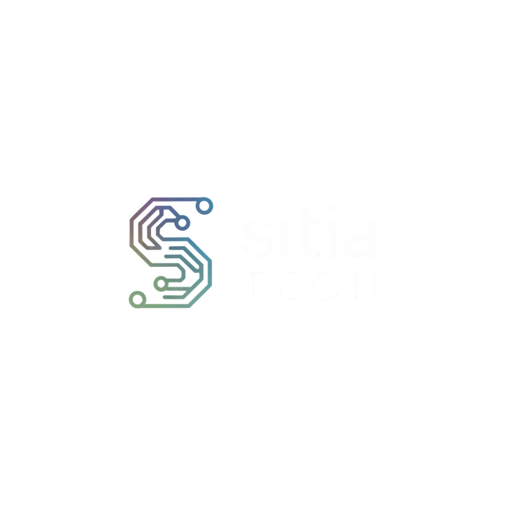
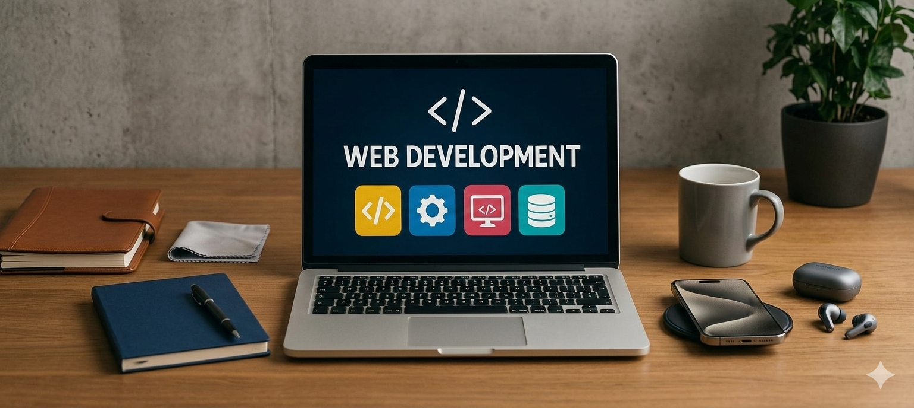
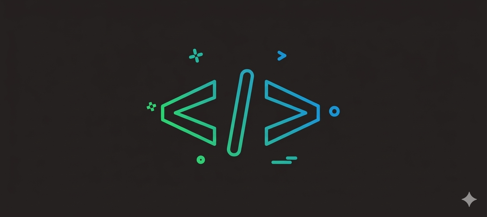

Diseñamos y construimos sitios web estratégicos para tu negocio en crecimiento. No te quedes con lo común, contáctanos hoy mismo.

Empieza a crear tu marca en internet.
01 /

Sitios web diseñados desde la necesidad de tu negocio. Código limpio y mantenible.
02 /

Auditoría técnica y mejora continua de velocidad, SEO y experiencia. Datos reales, cambios concretos.
03 /
Mantenimiento proactivo y evolución continua. Tu equipo técnico externo de confianza.
Cuatro fases claras. Sabés exactamente qué esperamos hacer, cuándo y cómo medimos el éxito en cada etapa.
Auditoría técnica, definición de objetivos y arquitectura estratégica alineada a métricas de negocio.
paso 1Prototipado de alta fidelidad, estructura de información y flujos de usuario optimizados.
paso 2Implementación modular con sprints semanales, testing exhaustivo y optimización técnica continua.
paso 3Monitoreo post-lanzamiento, iteración basada en datos reales y mejora continua.
paso 4SitiaTech transformó nuestra presencia digital. El nuevo sitio carga 3 veces más rápido y nuestras conversiones aumentaron un 156% en los primeros 3 meses.
La calidad técnica del trabajo es excepcional. El equipo no solo desarrolló, nos educó en cada decisión. Ahora tenemos un sistema escalable y bien documentado.
Profesionalismo absoluto. Cumplieron tiempos, presupuesto y superaron expectativas. El soporte post-lanzamiento ha sido impecable.
Soy desarrollador web con base en Carepa, Antioquia. Me especializo en crear sitios que no solo se ven bien, sino que cumplen objetivos de negocio y cargan rápido.
Trabajo con código limpio, buenas prácticas y un enfoque claro: entender tu necesidad primero, diseñar y desarrollar después. Cada proyecto incluye análisis de tu audiencia, estructura pensada para conversión y soporte continuo.
Cuéntanos de tu negocio. Te respondemos con un análisis honesto — sin venta agresiva, sin rodeos.
Información de contacto